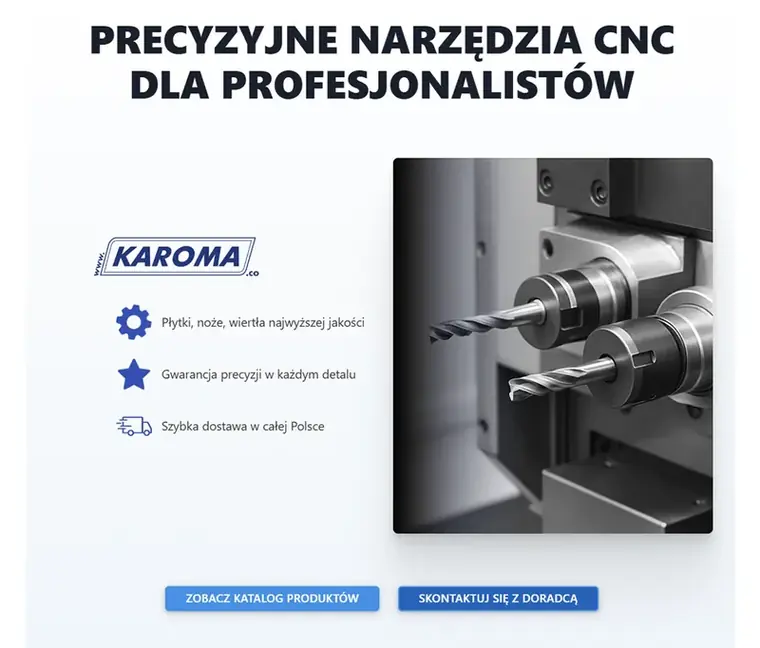
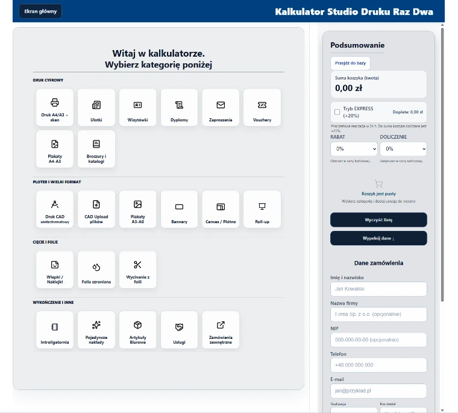
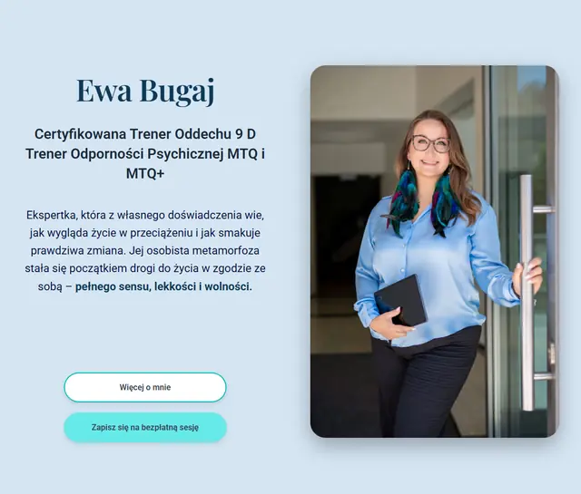

Projektuję i wdrażam rozwiązania cyfrowe, które porządkują pracę w firmie
Aplikacje, automatyzacje i analiza procesów — od diagnozy po wdrożenie, bez pakietów z półki.
Trzy obszary, w których pomagam
Wybierz obszar, który Cię interesuje — szczegóły znajdziesz niżej na tej stronie
Aplikacje biznesowe i strony internetowe
Dla firm, które potrzebują własnego narzędzia albo strony, która faktycznie wspiera sprzedaż.
Dla kogo
- Firma, która ma proces nie do zamknięcia w gotowym SaaS
- Marka, która musi mieć stronę z indywidualną logiką
Co dokładnie robię
- Projekt struktury i interfejsu — co gdzie jest i jak działa
- Aplikacje webowe szyte pod proces
- Strony i sklepy (WordPress, WooCommerce)
- Integracje z zewnętrznymi systemami
Co dostajesz
- Dokumentację i przekazanie wiedzy
- Wsparcie w pierwszych tygodniach użycia
- Możliwość dalszego rozwoju
Czego NIE robię w tym obszarze
- natywne aplikacje mobilne iOS/Android
- systemy wymagające pełnego zespołu backendowego
- projekty wymagające infrastruktury enterprise

Sklep internetowy dla producenta narzędzi CNC — od brandingu po wdrożenie. Spójna identyfikacja, dedykowane funkcje B2B i integracja płatności. Gotowy do przyjmowania zamówień od pierwszego dnia.
Zamieniam ręczne czynności w działające automaty
Najszybszy sposób, żeby zobaczyć efekt współpracy — oszczędność czasu widać zwykle już na starcie.
Dla kogo
- Firma robiąca regularnie to samo „na piechotę"
- Zespół, w którym dane krążą między arkuszami i mailami
Co dokładnie robię
- Automatyzacje w Google Apps Script i arkuszach
- Integracje między systemami, bazami i plikami
- Kalkulatory i konfiguratory oparte na realnej logice
- Powiadomienia, raporty i wyzwalacze automatyczne
Co dostajesz
- Pomiar realnej oszczędności (przed/po)
- Krótka instrukcja dla zespołu
- Wsparcie przy ewentualnych poprawkach
Czego NIE robię w tym obszarze
- wdrożenia enterprise RPA typu UiPath
- integracje wymagające własnej infrastruktury serwerowej
- boty AI na własnych modelach

Drukarnia wyceniała zlecenia ręcznie — nawet ok. 60 minut na jedno zamówienie, z ryzykiem pomyłki. Aplikacja z kalkulatorem, koszykiem i eksportem PDF skróciła ten czas do ok. 5 minut. Zero kosztów stałych utrzymania.
Diagnozuję procesy i wskazuję kierunek zmiany
Zanim powstanie aplikacja czy automat, trzeba najpierw zrozumieć, dlaczego proces nie działa i co faktycznie warto zmienić.
Dla kogo
- Firma, w której „wszystko jakoś działa", ale wolno i z błędami
- Lider chcący wiedzieć, co usprawnić w pierwszej kolejności
Co dokładnie robię
- Analiza procesu i wskazanie wąskich gardeł
- Projekt nowego przebiegu pracy lub narzędzia
- Decyzja: aplikacja, automat, skrypt czy zmiana w pracy
Co dostajesz
- Mapę procesu „przed → po"
- Konkretne rekomendacje uporządkowane wg priorytetu
- Mniej błędów i większą przewidywalność
Czego NIE robię w tym obszarze
- pełny consulting strategiczny
- szkolenia zespołów z metodyk
- audyty wymagające certyfikacji

Marka coachingowa potrzebowała platformy sprzedażowej — ale najpierw decyzji, na czym ją zbudować. Przetestowaliśmy trzy rozwiązania (Webflow, Wix, WordPress), wybraliśmy jedno. Klientka zarządza systemem samodzielnie od pierwszego dnia po wdrożeniu.
Narzędzia i technologie
- WordPress · WooCommerce
- Google Apps Script · Google Sheets
- Aplikacje webowe (HTML / CSS / JS)
- Integracje API i systemy zewnętrzne
Jak wygląda współpraca
Od pierwszej rozmowy do działającego rozwiązania — w sześciu krokach
| Etap | Co dzieje się na tym etapie | Po Twojej stronie |
|---|---|---|
| 1. Rozmowa wstępna | Sprawdzamy, czy projekt ma sens i czy dobrze nam się będzie współpracować. Bez zobowiązań. | 30–60 minut rozmowy |
| 2. Analiza procesu | Wchodzę w proces, rozmawiam z osobami, które go wykonują, identyfikuję wąskie gardła. | Dostęp do procesu i osób, które go znają |
| 3. Projekt rozwiązania | Projektuję strukturę, interfejs i logikę działania. Tu zapadają kluczowe decyzje. | Decyzje akceptujące kierunek |
| 4. Budowa | Buduję rozwiązanie wraz z integracjami. Pokazuję działający produkt w iteracjach. | Informacja zwrotna w trakcie |
| 5. Testy | Testuję wszystko ręcznie, w realnych scenariuszach, przed startem produkcyjnym. | Wsparcie w sprawdzeniu skrajnych przypadków |
| 6. Wdrożenie i wsparcie | Uruchamiam rozwiązanie i wspieram pierwsze tygodnie użycia. | Wdrożenie zmian w codziennej pracy |
Najczęstsze pytania o usługi
Skąd wiem, ile to będzie kosztować?
Każdy projekt wyceniam indywidualnie, po pierwszej rozmowie i wstępnej analizie zakresu. Dla produktów cyfrowych podaję orientacyjny próg przy opisie usługi. Automatyzacje i analizy mają bardzo różny zakres, dlatego ich cenę podaję po krótkiej rozmowie.
Dlaczego nie ma gotowych pakietów cenowych?
Nie wierzę w pakiety z półki przy projektach, które realnie zmieniają sposób pracy w firmie. Każdy proces wygląda inaczej, każda firma ma inną gotowość na zmianę — dlatego zakres i cenę ustalam pod konkretną sytuację.
Jak długo trwa projekt?
Większe projekty — aplikacja, strona z integracjami, automatyzacja kilku procesów — to zwykle 4–5 miesięcy. Mniejsze usprawnienia kilka tygodni. Termin ustalam po analizie, na podstawie realnego zakresu.
Pracujesz samodzielnie czy z zespołem?
Prowadzę cały projekt od analizy po wdrożenie — i to ja odpowiadam za efekt. Tam, gdzie potrzebny jest dodatkowy specjalista, dobieram zaufaną osobę pod konkretny zakres. Korzystam też z narzędzi AI tam, gdzie realnie skracają pracę bez utraty jakości.
Jak zarządzasz zmianami w zakresie projektu?
Zakres ustalam na starcie i pilnuję go jako punkt odniesienia. Jeśli w trakcie pojawia się nowy pomysł, oceniam go względem priorytetów: czy wchodzi do tej wersji, czy czeka na kolejną. Dzięki temu projekt nie rozrasta się bez końca, a Ty wiesz, co i kiedy dostajesz.
Jak wygląda Twój proces zarządzania ryzykiem?
Największe ryzyka — techniczne, czasowe, zależne od osób trzecich — nazywam już na etapie analizy, zanim staną się problemem. Jeśli coś może pójść nie tak, mówię o tym wcześniej, z planem B, a nie po fakcie.
Jak pracujesz z zespołem i dostawcami klienta?
Jeśli projekt wymaga integracji z zespołem klienta albo zewnętrznym dostawcą (np. drukarnią, agencją, innym wykonawcą), ustalam z nimi zakres odpowiedzialności na starcie i jestem jednym punktem kontaktu po stronie wdrożenia — żeby nie było niejasności, kto za co odpowiada.
Czy zostaję sam po wdrożeniu?
Nie. Po starcie zostaję na tyle blisko, żeby wesprzeć pierwsze tygodnie użycia i dopracować to, co widać dopiero w praktyce. Dłuższe wsparcie ustalamy osobno, jeśli ma sens.
Nie wiem, czego potrzebuję — co wtedy?
To częsta sytuacja. Wtedy najlepiej zacząć od obszaru „Analiza procesów" — od analizy, która pokaże, gdzie naprawdę leży problem i jakie rozwiązanie ma sens. Często okazuje się, że to nie jest to, o czym wszyscy myśleli na początku.
Opisz problem. Sprawdzę, czy da się go uprościć.
Odpowiadam w ciągu 24 godzin. Pierwsza rozmowa pozwala ocenić, czy temat ma sens i jaki powinien być kolejny krok.